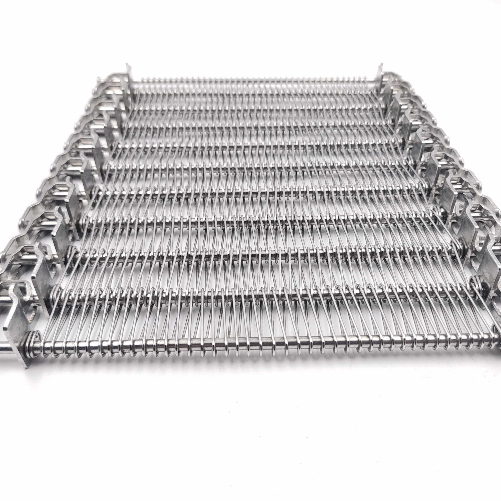
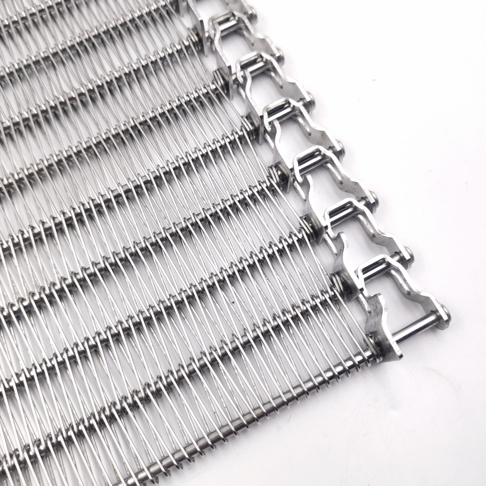
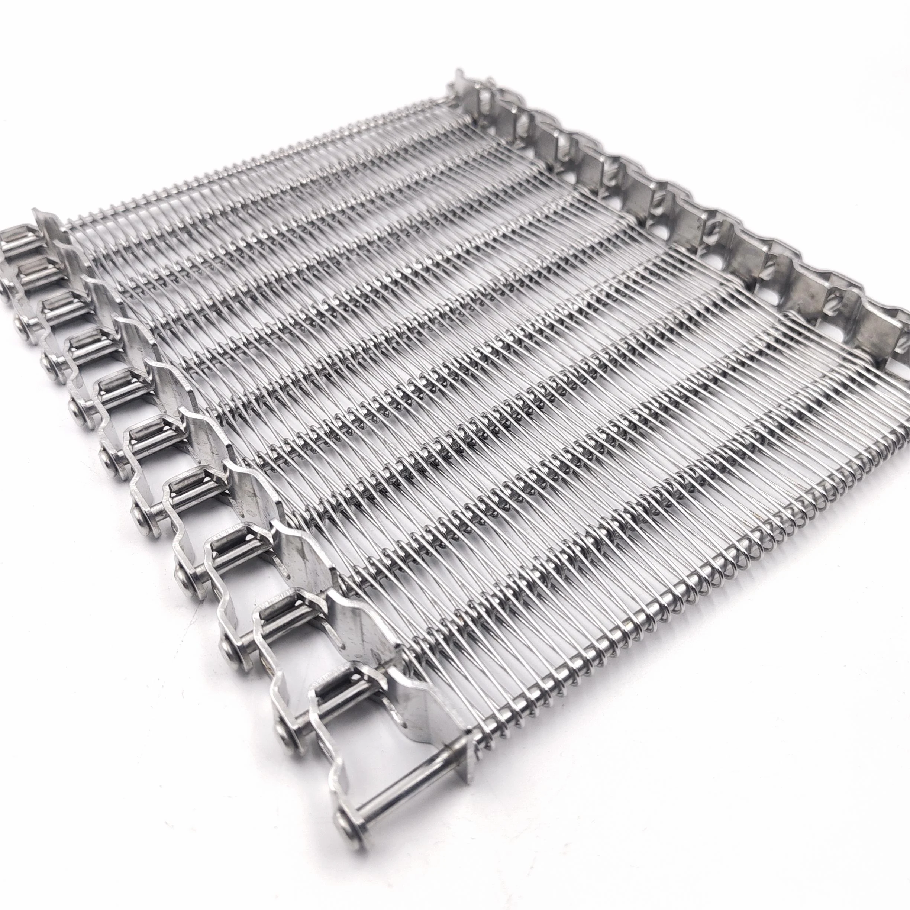
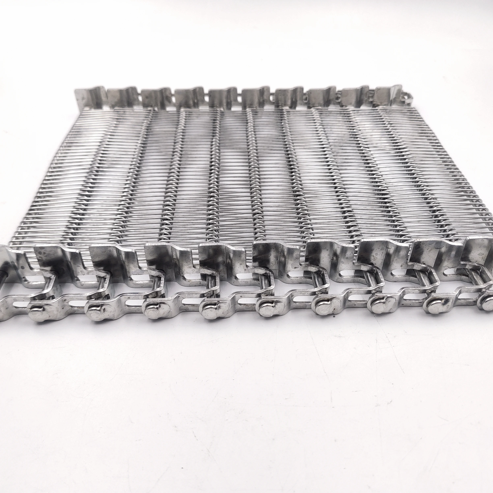
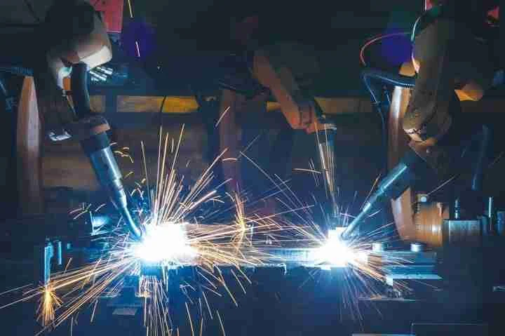
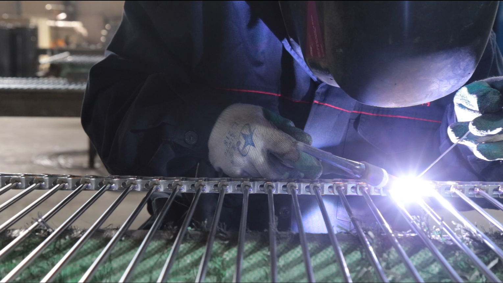

Priority Proof
Robotic Welding Process
Repeatable weld position and weld size
Automatic welding is the main production proof for spiral freezer belts because weld uniformity affects running stability and repeat orders.
Spiral freezer belts must fit the drum, run smoothly in low temperature, and repeat the same specification later. YIYI supports OEM builds and replacement projects with drawing-based production, robotic welding, drum-fit review, and final inspection proof.

Most spiral freezer belt inquiries start from three risks: OEM fit, replacement matching, or repeat supply consistency. The belt must match drum geometry, chain layout, turning direction, and drive engagement before production.
YIYI produces custom spiral freezer belts for IQF freezers, spiral cooling systems, and food processing lines. Single-row, double-row, three-row, and special chain structures are confirmed by drawing or sample.
For spiral freezer belt projects, the strongest trust proof is not a claim. It is factory evidence: automatic welding, stainless wire control, raw material verification, drum-fit review, and rejected-risk examples before shipment.
Automatic welding is the main production proof for spiral freezer belts because weld uniformity affects running stability and repeat orders.
Raw material and wire condition are controlled before forming, welding, and final QA for food and industrial applications.

Drum diameter, turning direction, chain row count, and sprocket engagement are reviewed before shipment release.
Public case evidence keeps the engineering value while removing customer names, order numbers, shipping marks, labels, faces, and logistics details.
Drawing-based belt configuration with robotic welding, chain row confirmation, drum-fit review, final QA images, and export packing record.
Old belt photo and sample dimensions used to confirm width, wire diameter, chain pitch, rod pitch, edge finish, and drum compatibility.
Metal conveyor belts are custom-built. Final quotation should be confirmed with drawings, old belt photos, drum diameter, and application details.
Recorded spiral freezer belt projects include approximately 300-2,300 mm overall width, depending on equipment design.
Typical recorded wire diameters include 1.2-1.6 mm, with cross-rod diameter commonly around 5 mm for many projects.
Single-row, double-row, three-row, and special multi-row chain layouts have been produced for different drum diameters and drive systems.
Weld position, weld size, burr-free edge, flatness, smooth contraction, drying, cleaning, and packing are checked before release.
A spiral freezer belt is not selected by appearance alone. For IQF freezing, spiral cooling, proofing, cooking, steaming, and low-temperature food processing lines, the belt must match the spiral tower geometry, drum diameter, inside turn radius, sprocket engagement, chain pitch, rod pitch, belt width, product load, and running direction.
The main buying risk is mismatch. If the chain row layout, turn radius, or drive engagement is wrong, the belt may track poorly, lift in the curve, create excessive tension, or fail to repeat smoothly in later replacement orders. YIYI reviews these points before quotation so OEM builders and replacement teams can confirm the belt as an engineered component, not just a metal mesh product.
Drum diameter, inside radius, tower direction, belt path, and available tension determine whether the spiral freezer belt can contract and return smoothly.
Single-row, double-row, or three-row chain structures are reviewed together with chain pitch, rod pitch, and side clearance for replacement matching.
Sprocket tooth profile, chain engagement, shaft position, and running direction are checked to reduce jumping, side pull, and unstable tracking.
Used for spiral freezing, IQF tunnels, cooling, proofing, cooking, steaming, pasteurizing, bakery, meat, seafood, poultry, and prepared food lines.
Material grade, weld consistency, mesh opening, air circulation, drainage, and cleanability are reviewed for cold rooms and hygienic production.
Drawings, samples, and production records keep the replacement conveyor belt specification repeatable across future OEM and distributor orders.
The review flow below places the most important spiral freezer belt keywords into the same order an engineer normally uses: application, geometry, drive, production, running check, and packing.
These white-background product views support engineering confirmation: full belt overview, chain edge, mesh surface, rod connection, weld detail, and finished condition before quotation or replacement review.



For spiral freezer belts, the edge is part of the drive and hygiene system. Rod-end finish, weld profile, chain connection, and side structure help determine cleanability, handling safety, sprocket fit, and long-term running stability.

Many suppliers can quote a spiral freezer belt. Fewer can reduce the specific buying risks behind that quote: wrong drum matching, uneven weld quality, unclear edge execution, or poor repeat-order consistency. That is the gap this page is designed to address.
YIYI Mesh Belt works from drawings, samples, and real application conditions, then converts those inputs into a controlled production specification that can be reviewed, repeated, and supported through future orders.

A spiral freezer belt is custom-built. Width, wire diameter, rod diameter, chain pitch, drum diameter, running direction, and edge finish must be confirmed before quotation.
Not all parameters are always required upfront. For replacement projects, a sample of the existing belt and basic dimensional information are often sufficient to begin the matching process. For OEM projects, drawings and equipment specifications are preferred. Contact us to discuss your specific project requirements.
Weld quality is one of the easiest things for suppliers to promise and one of the hardest things for buyers to verify remotely. On a spiral freezer belt, it directly affects running stability, structural consistency, and the confidence to place repeat orders.
YIYI Mesh Belt uses robotic welding because buyers need more than a statement of quality. They need a process that keeps weld position and weld size more consistent across the full belt and across future batches.


Spiral freezer belt quality control focuses on the failure points that affect running: weld consistency, edge finish, contraction, flatness, surface cleanliness, and packing readiness.


Drum diameter is one of the most critical - and most frequently underestimated - inputs in a spiral freezer belt project. A belt that does not correctly match the drum diameter will not contract and expand smoothly through the turn. This creates running resistance, structural stress, premature wear, and in some cases, chain disengagement or belt deformation.
YIYI Mesh Belt treats drum diameter and turning compatibility as production specifications, not afterthoughts. Where the drum diameter is known, the belt structure is configured to match. Where it is unknown, YIYI Mesh Belt will request this information or work from the existing belt dimensions before production begins.

YIYI supports first OEM builds, replacement matching, repeat orders, and urgent maintenance projects through the same drawing, sample, production, and inspection workflow.

For food-related industrial applications, surface condition is not a cosmetic consideration. It affects cleanability, hygiene compliance, and the acceptability of the belt in regulated food production environments.
YIYI Mesh Belt applies electropolishing to spiral freezer belts where required. Electropolishing smooths the metal surface, reduces surface roughness, and improves corrosion resistance - supporting better cleanability and longer service intervals in hygiene-sensitive environments.


Yes. YIYI Mesh Belt supports drawing-based production. Technical drawings, dimensional specifications, and application requirements can all be used as the basis for production planning and sample confirmation.
Yes. YIYI Mesh Belt supports replacement projects through sample review, dimensional matching, and compatibility analysis with existing drum geometry and drive systems.
Robotic welding improves weld consistency, controls weld position and weld size across every joint, and supports stable repeat production. For spiral freezer belts, weld quality directly affects running stability, structural consistency, and long-term service reliability.
Key parameters include overall width, effective width, wire diameter, spiral pitch, cross rod diameter, rod and chain pitch, chain structure, chain row count such as single-row, double-row, or three-row chain, drum diameter or turning requirement, running direction, divider or flight requirements, and edge finish style.
Yes. YIYI Mesh Belt can supply matched spare components including rods, chain pieces, and connection parts matched to the original belt specification.
Yes. All spiral freezer belts go through 100% final inspection before shipment release, covering dimensional verification, surface condition, edge finish, and structural consistency.
Yes. YIYI Mesh Belt maintains reserve raw material stock to support faster response on urgent replacement and maintenance orders where production lead time is critical.
Electropolishing is available for food-related and hygienic applications. Belts are cleaned, dried, and inspected for surface condition before packing and export.
Send the drawing if you have one. Send the sample dimensions if you are matching an existing belt. If your spiral belt uses a three-row chain structure, include chain row count, chain pitch, sprocket details, and drum diameter so we can review fit and drive engagement before quoting.